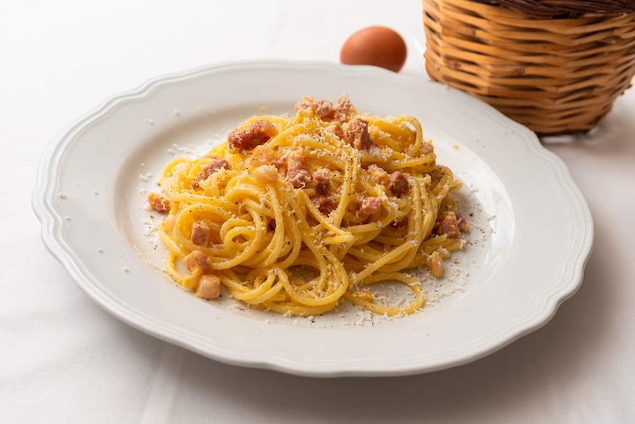

PASTA CARBONARA
DESCRIPTION
This is the traditional carbonara recipe made with just guanciale, pecorino Romano, egg yolks, pepper, and pasta. Depending on the texture you prefer, you can opt between cutting the guanciale into dices or strips — dices will be soft on the inside, while strips will end up being more on the crisp side when sautéed.
INGREDIENTS
4 SERVINGS
SPAGHETTI ALLA CARBONARA
- 12 oz (340g) spaghetti, rigatoni, tonnarelli, or mezze maniche
- 4 oz (115g) guanciale (or rindless bacon, if guanciale is not available)
- ¼ cup (30g) pecorino Romano, finely grated (or Parmigiano-Reggiano if pecorino Romano is not available)
- 4 fresh large egg yolks
- salt, for cooking pasta
- black pepper, freshly ground
PREPARATION
- STEP 1/8
- STEP 2/8
- STEP 3/8
- STEP 4/8
- STEP 5/8
- STEP 6/8
- STEP 7/8
- STEP 8/8
1 | SPAGHETTI ALLA CARBONARA
If you’d like to end up with a crispier guanciale, first cut the guanciale into ½ cm (¼”) slices, then stack them, and cut into 5 cm (2”) long strips. If you’d like the guanciale to have more of a chew to it — crispy on the outside and soft on the inside — cut it into dices that are ½ x ½ cm (¼” x ¼”).
Add the yolks, the pecorino Romano, and a pinch of freshly ground black pepper to a bowl, then mix with a whisk.
Sauté the guanciale (do not add any oil) over medium heat for 2 minutes, until crisp and rendered. Take off heat and let it cool.
Cook the pasta according to package directions — however, drain it (reserve some of the pasta cooking water for later, about 1 cup/240 ml, giver or take) a bit sooner than it states on the packaging, as it needs to be just shy of al dente — it will continue to cook when mixed with the sauce.
Add the reserved pasta cooking water to the pan with guanciale, then add the pasta and stir thoroughly.
Next, take the pan with the guanciale and pasta off heat, then add the yolk and cheese mixture and stir quickly; otherwise, the eggs might get scrambled.
Season with more freshly ground pepper.
Serve lukewarm on warmed plates.